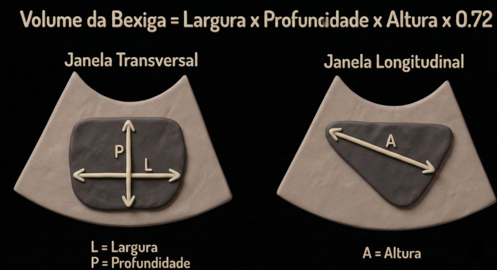

Calculadora POCUS – Volume Vesical
Volume da bexiga por ecografia · Fórmula elipsoide e fatores de correção
Dados de entrada
Medidas (corte transversal e longitudinal)

Formato da bexiga
Parâmetros calculados
Sobre o volume vesical por ultrassom (POCUS)
A estimativa do volume de urina na bexiga pelo ultrassom à beira-leito permite distinguir, sem cateterizar, se a diurese ausente decorre de retenção urinária (bexiga cheia) ou de baixo débito urinário (bexiga vazia). É útil na oligúria, no pós-operatório, na suspeita de retenção aguda e para seguir o resíduo pós-miccional. O cálculo parte da geometria da bexiga: mede-se a víscera em dois planos e aplica-se um coeficiente que aproxima seu formato ao de um elipsoide.
Como calcular
Na janela transversal obtêm-se a largura (L) e a profundidade anteroposterior (P); na janela longitudinal, a altura (A). Com as três medidas em centímetros, o volume é o produto das dimensões pelo fator de correção do formato:
Volume (mL) = L × P × A × fator. Como as medidas estão em cm, o produto já resulta em cm³, e 1 cm³ equivale a 1 mL. O resultado é arredondado para o mililitro inteiro. Meça a bexiga em seu maior diâmetro em cada plano e com o paciente com a bexiga razoavelmente distendida, para reduzir o erro.
Como interpretar
O fator de correção ajusta a fórmula ao formato observado da bexiga. Quando o formato é incerto, a calculadora adota 0,72 como valor padrão, intermediário entre os extremos:
| Formato | Fator |
|---|---|
| Esférico | 0,52 |
| Triangular | 0,66 |
| Não sei (padrão) | 0,72 |
| Cilíndrico | 0,81 |
| Cuboide | 0,89 |
O coeficiente 0,52 corresponde ao clássico fator do elipsoide (aproximadamente π/6); formatos mais retangulares, próximos de um cuboide, retêm mais volume e recebem fatores maiores. Na prática, um volume estimado acima de 400 mL na vigência de incapacidade de urinar sugere retenção e costuma indicar drenagem vesical — a calculadora sinaliza esse valor em destaque.
Quando usar e limitações
Trata-se de uma estimativa, não de uma medida exata: é operador-dependente, sofre com a escolha imprecisa dos planos e superestima ou subestima conforme o formato real da bexiga. Ascite, cistos anexiais, cateter insuflado e bexigas muito trabeculadas ou pós-cirúrgicas prejudicam a acurácia. Quando o volume preciso for decisivo, a cateterização mede diretamente. Use o número como apoio ao raciocínio clínico e, para condutas de retenção e drenagem, confira sempre o protocolo do seu serviço.
Referência: Bih LI, Ho CC, Tsai SJ, Lai YC, Chow W. Bladder shape impact on the accuracy of ultrasonic estimation of bladder volume. Arch Phys Med Rehabil. 1998;79(12):1553-1556.